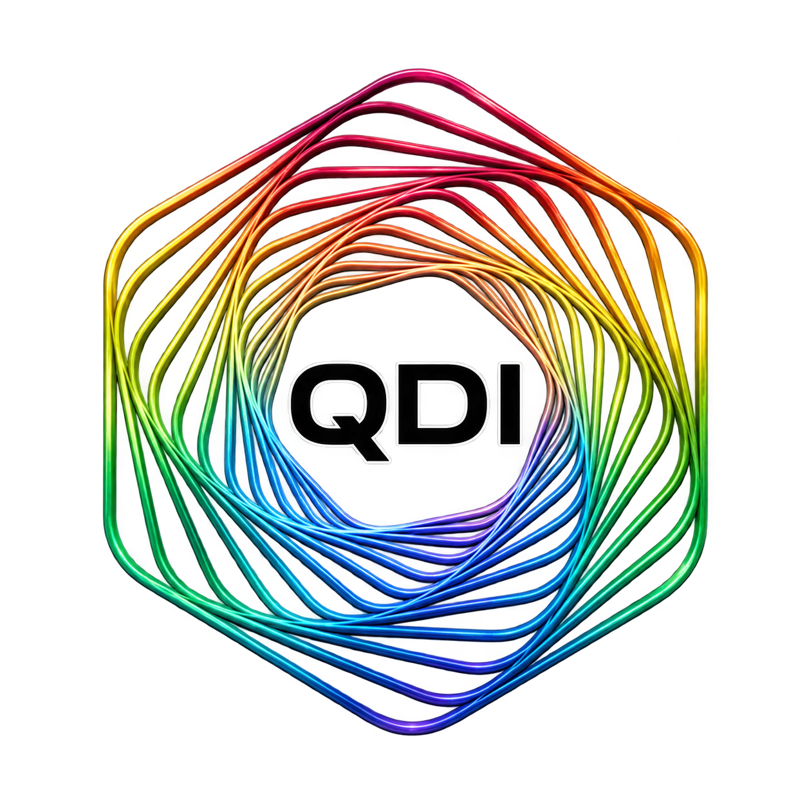
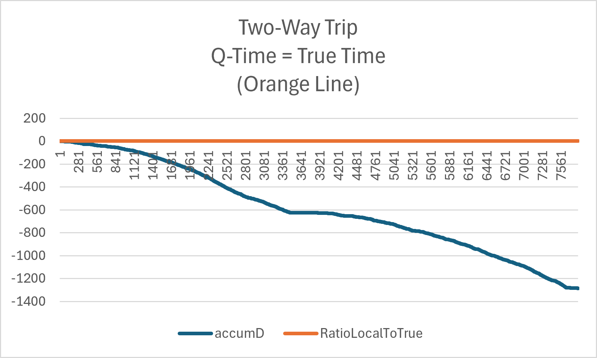

Keeping time
in focus.
QDIndex is a software-based, motion-defined drift indexing module designed to support timing coherence when satellite signals are disrupted or unavailable.
Deterministic motion-state inputs. A drift index at each interval. A new approach to resilient navigation timing.
Explore QDIndex →Discuss evaluationPatent pending · U.S. Application 19/393,563

Motion state in. Drift index out.
Quantum Drift Index (QDIndex) is a navigation timing module intended to produce a motion-defined drift value that can be integrated into a navigation stream to reduce effective timing error. Its proprietary internal mechanism is not disclosed here.
Deterministic
Computes a drift index from the supplied motion state and local monotonic counter.
Software-based
Designed for embedding into existing navigation and timing software without dedicated timing hardware in the QDI module itself.
GNSS-independent operation
Designed to run without live GPS, ephemerides, or an external time reference after input state is available.
Seven inputs. One output.
Inputs
x, y, z — position in metersvx, vy, vz — velocity in meters/secondtlocal — monotonic time counter in seconds
Coordinate representations include ENU, NED, or ECEF as appropriate to the client implementation.
Output
D — drift index, expressed in seconds per evaluation interval.
Prototype provisioning described in the presentation includes Windows QDI.dll and Unix libQDI.so, with sample calling software.
Built for moving platforms.
Potential evaluation environments include autonomous systems and platforms where size, weight, and timing resilience matter.
Preliminary road testing.
The QDIndex presentation describes a Windows PC prototype using a consumer GPS dongle during an approximately two-hour, 84-mile round-trip vehicle test between Haymarket, Virginia, and Washington, DC. GPS was used for location, motion vectors, and comparison to a time reference during the test.

Illustrative chart reproduced from the supplied QDIndex presentation. These are preliminary prototype results, not independent verification of timing accuracy or a demonstrated millisecond-level holdover guarantee.
Independent evaluation sought
Meadow Technologies LLC seeks controlled tests comparing QDIndex-assisted timing against an uncorrected baseline and an authoritative timing reference under GNSS-denied or degraded conditions.
Evaluate QDIndex.
For technical discussions, pilot testing, integration, or licensing inquiries, contact Meadow Technologies LLC.
Robert Bruce Davis
Founder, Meadow Technologies LLC
qdi@rbdavis.com · VonHessen@live.com